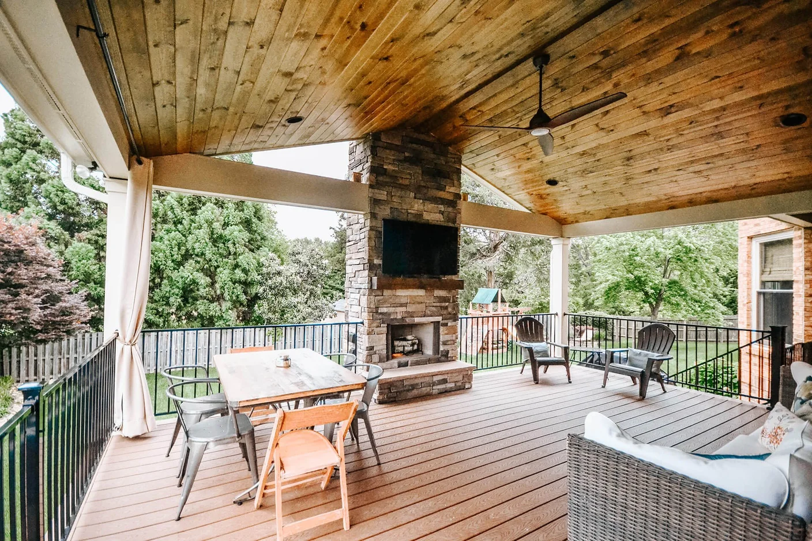

01
Screened or open-air
Choose bug protection and a room-like feel, or an open covered porch that stays closely connected to the yard.

Local Porches • Midlothian, VA
Screened and covered porches designed around shade, airflow, roof integration, and comfortable outdoor living.
Built for Midlothian homes
SES Custom Homes plans Midlothian remodeling projects around the home’s architecture, the way the family uses the space, and the demands of Central Virginia weather.
Midlothian’s wooded neighborhoods make screened porches especially useful during warm, buggy months. We balance tree-filtered light, ceiling height, privacy, airflow, and architectural compatibility.
A porch adds a roofed outdoor room, which makes the connection to the house especially important. We coordinate rooflines, drainage, ceiling height, screens or open sides, lighting, and circulation as one design.
The details that matter
Choose bug protection and a room-like feel, or an open covered porch that stays closely connected to the yard.
Pitch, valleys, flashing, gutters, and ceiling form are planned to look intentional and move water correctly.
Fan locations, outlets, lighting, privacy, views, flooring, and furniture zones make the porch useful day to day.
From first visit to final walkthrough
We start with the home, the site, and the result you want. Product recommendations follow those facts—not the other way around.
We explain the decisions, confirm expectations, and keep the next step clear.
We explain the decisions, confirm expectations, and keep the next step clear.
We explain the decisions, confirm expectations, and keep the next step clear.
Nearby communities
We work with homeowners in and around Salisbury, Walton Park, Queensmill, Hallsley, and Woodlake. Contact us to confirm scheduling for your address.
Frequently asked questions
Both have a roof. A screened porch adds insect screening and often feels more like a defined room; a covered porch stays more open to breezes, views, and the yard.
Often, yes. The right approach depends on wall height, windows, existing roof pitch, drainage paths, and the desired ceiling. We study those conditions before settling on a roof form.
Yes. Electrical planning can include ceiling fans, lighting, receptacles, and switching. These locations should be coordinated early with the framing and ceiling design.
Tell us what you want to improve. We’ll discuss the property, your priorities, and the right next step.